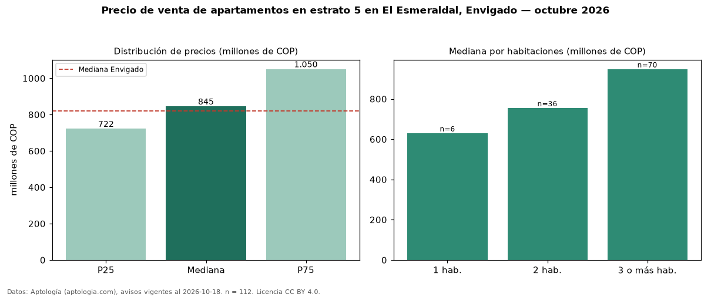

Precio de venta de apartamentos en estrato 5 en El Esmeraldal, Envigado — octubre 2026
En El Esmeraldal, Envigado, la mediana de precio de venta de apartamentos en estrato 5 es COP 845 millones, según 112 avisos vigentes. Frente a la mediana de toda la vivienda de estrato 5 de El Esmeraldal (COP 938 millones, n = 136), queda 10 % por debajo; este segmento reúne el 82 % de esos avisos. Por metro cuadrado, la mediana es COP 8,59 millones/m² (n = 110), 3 % por encima del conjunto de referencia (COP 8,33 millones/m²). El área mediana anunciada es 100 m². El segmento con más oferta es el de 3 o más habitaciones (70 avisos, mediana COP 948 millones); pasar de 1 habitación a 3 o más habitaciones cambia la mediana +50 %. La administración mediana declarada es COP 715.000 al mes (n = 72). La mediana de todos los apartamentos en venta de Envigado es COP 820 millones (+3 % de diferencia). 92 % de los avisos con el dato declara parqueadero. Datos: Aptología (aptologia.com), CC BY 4.0 — https://www.aptologia.com/venta/envigado/el-esmeraldal. Archivos: PDF, CSV con las cifras y gráfica PNG.

| Avisos únicos | 112 |
|---|---|
| Percentil 25 | COP 722.250.000 |
| Mediana | COP 845.000.000 |
| Percentil 75 | COP 1.050.000.000 |
| Mediana por m² | COP 8.590.404 |
Fuente: avisos vigentes de portales inmobiliarios recopilados por Aptología, deduplicados (mínimo 30 avisos únicos por celda). Precios pedidos, no cerrados. Fecha: 2026-10-18.